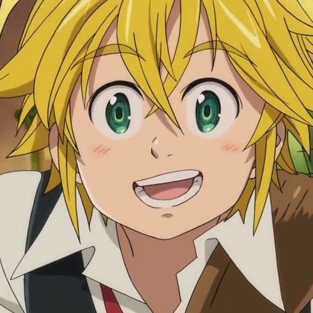

Sinopse:
Os Sete Pecados Capitais são um grupo de cavaleiros que vivem na região de Britânia,
mas se separaram, depois de serem acusados de tentar derrubar o Reino de Liones. Sua suposta derrota
chegou pelas mãos dos Cavaleiros Sagrados, mas os rumores que eles ainda estavam vivos, continuaram a
persistir. Dez anos depois, os Cavaleiros Sagrados encenaram um golpe de Estado e capturaram o Rei,
tornando-se os novos governantes tiranos do Reino. A terceira princesa, Elizabeth, começou uma jornada
para encontrar os Sete Pecados Capitais, para conseguir sua ajuda e retomar novamente seu Reino.
Autor: Nakaba Suzuki
Adaptações: Os Sete Pecados Capitais: Prisioneiros dos Céus (2018)
Data de publicação: 10 de outubro de 2012 – 25 de março de 2020
Gêneros: Ficção de aventura, Fantasia
| Temporada | Episódios |
| Temporada 1 | |
| Temporada 2 | |
| Temporada 3 |
